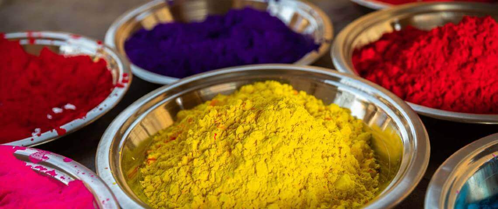
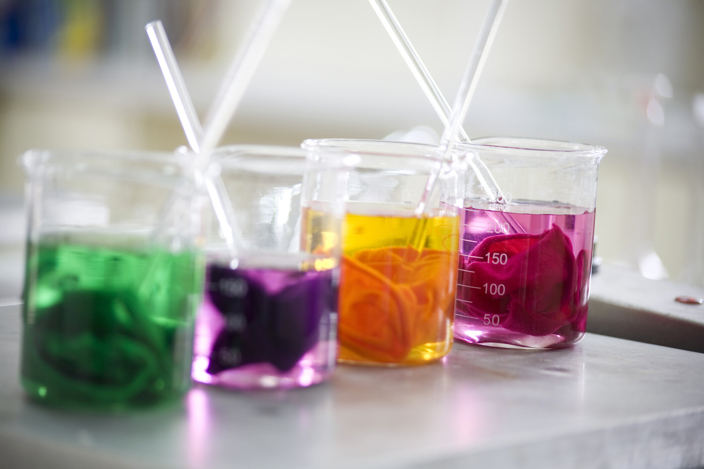
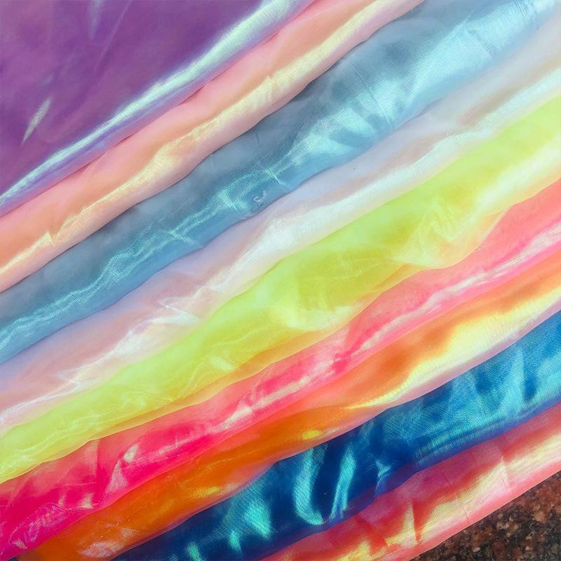

01 Doğal Boyalar
Doğal boyalar bitkilerden, hayvanlardan ve minerallerden elde edilir. Çevre dostu
olmaları ve sürdürülebilirlik açısından önem taşır.
- İndigo: İndigo bitkisinden elde edilen bu mavi boya, denim kumaşlarda yaygın
olarak kullanılır.
- Koşnil (Karmin): Koşnil böceğinden elde edilen kırmızı bir boya olup,
geleneksel olarak tekstil ve gıda boyamada kullanılır.
- Mordan Boyalar: Bu boyalar, bitkisel ve hayvansal kaynaklardan elde edilir ve
diğer doğal boyaların renklerinin sabitlenmesine yardımcı olmak için kullanılır.

02 Sentetik Boyalar
Kimyasal sentez yoluyla üretilen bu boyalar, genellikle daha parlak ve
dayanıklıdır.
- Asit Boyalar: Asidik ortamda çalışırlar ve yün, ipek, naylon gibi protein ve
poliamid liflerine güçlü bağlarla tutunurlar. Canlı renkler ve yüksek renk haslığı sağlarlar.
- Bazik (Katyonik) Boyalar: Akrilik ve diğer anyonik lifler için uygundur. Bu
boyalar pozitif yüklüdür ve negatif yüklü liflerle etkileşime girerler, bu da parlak ve canlı
renkler elde edilmesini sağlar.
- Direkt Boyalar: Pamuk, viskon ve keten gibi selüloz liflere doğrudan uygulanır.
Boyama işlemi basittir ve bu boyalar liflere doğrudan tutunur. Genellikle uygun maliyetlidir
ancak renk haslığı diğer boyalara göre daha düşüktür.
- Dispers Boyalar: Özellikle polyester, asetat ve bazı sentetik lifler için
kullanılır. Bu boyalar su içinde düşük çözünürlüğe sahiptir ve liflere difüze olurlar, bu da
yüksek renk dayanıklılığı sağlar.
- Reaktif Boyalar: Pamuk, yün ve ipek gibi doğal liflerle kimyasal reaksiyona
girerek güçlü kovalent bağlar oluşturur. Bu bağlar, boyanın liflere sıkı bir şekilde tutunmasını
sağlar ve yıkama, sürtünme gibi etkilere karşı yüksek dayanıklılık sunar.
- Kükürt Boyalar: Pamuk ve diğer selüloz liflerde koyu ve dayanıklı renkler elde
etmek için kullanılır. Genellikle mavi, kahverengi ve siyah gibi koyu renklerde kullanılır ve
yüksek renk haslığı sunar.
- Vat Boyalar: Pamuk ve selüloz lifler için kullanılır. Bu boyalar, indirgenmiş
formlarında liflere nüfuz eder ve oksidasyonla renklendirilir. Özellikle dayanıklılık ve yıkama
haslığı gerektiren uygulamalarda tercih edilir.
- Pigment Boyalar: Çeşitli lifler üzerinde kullanılabilir. Genellikle binder
(bağlayıcı) ile birlikte uygulanır ve lifler üzerinde fiziksel bir kaplama oluşturur. Renk
haslığı, bağlayıcının kalitesine bağlıdır ve genellikle diğer boyalar kadar yüksek değildir.

03 Özel Boyalar
Bunlar, belirli özelliklere sahip tekstil ürünleri için geliştirilmiş boyalardır.
- Floresan Boyalar: Özellikle güvenlik giysileri ve spor ekipmanlarında
kullanılan bu boyalar, ışığı emerek yüksek parlaklık sağlar.
- İndigo Boyalar: Denim ve kot kumaşlarında kullanılan bu boyalar, yıpranmış ve
solmuş görünüm için idealdir.
- Mikrokapsül Boyalar: Parfüm, ilaç veya diğer aktif maddelerle kaplanmış
mikrokapsüller içeren boyalar, tekstil ürünlerine ek işlevler kazandırabilir.